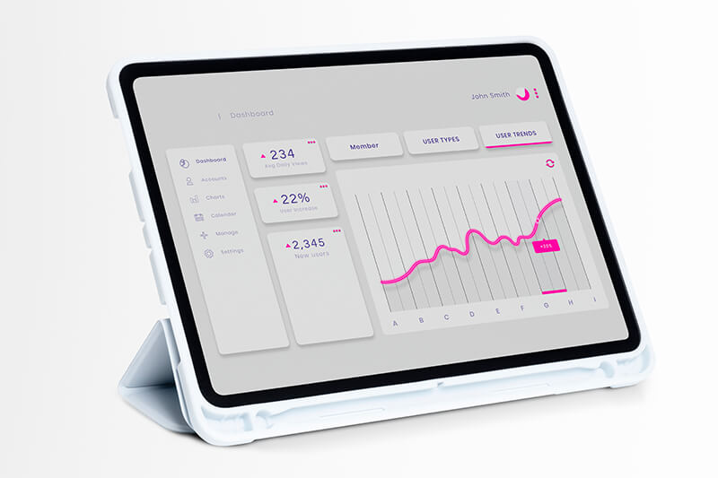
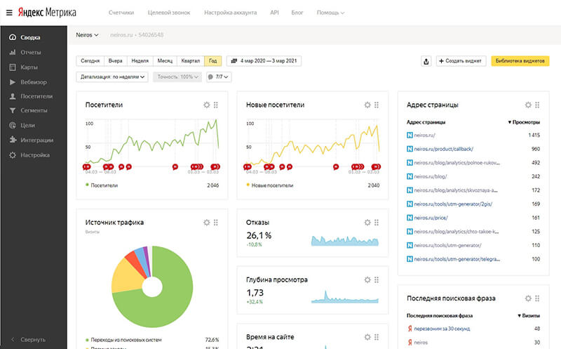
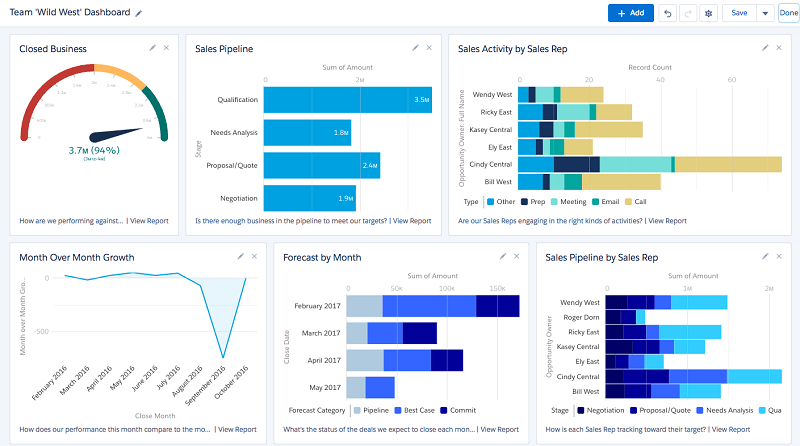
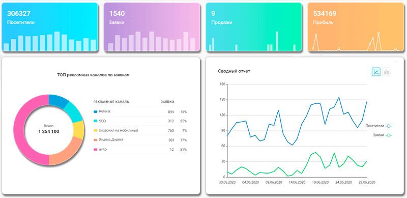

Эффективный руководитель - тот, кто хорошо осведомлен о положении дел компании. Своевременно доставленная информация меняет многое: например, спасает фирму от финансового краха, приносит прибыль, способствует принятию стратегически верного решения. Поэтому качественный инструмент для обработки данных ценится на вес золота.

Что такое дашборд
Дашборд (от англ. dashboard – инструментальная панель) – планка, доска с одним или несколькими измерительными приборами, содержащая некую информацию. Приборная доска автомобиля, любой градусник, настенные часы, расписание автобусов на остановке – это вариации дашбордов. Сегодня так называют аналитическую панель, на которой собрана информация из разных источников.
Немного истории
Дашборд считают новым явлением из-за американизма в названии. Но появление первой панели с информацией относят к X веку нашей эры. Астрономы, наблюдавшие за движением небесных тел, создали диаграмму, объединяющую разные наблюдения. Идея быстро распространилась: люди начали составлять карты, графики, таблицы расчетов. Еще позже их стали использовать, чтобы собирать статистику и презентовать информацию. С развитием информационных технологий дашборды перешли в новое качество – электронные аналитические таблицы.
О принципах визуализации данных
Пользователи делятся на две группы – кто создает, и кто непосредственно использует (просматривает информацию). Программа для создания дашборда состоит из редактора и экрана вывода. В сфере разработки ПО для работы с дашбордами наблюдается высокая конкурентная борьба за лояльность пользователей, которая диктует определенные требования. Они кратко сформулированы в 8 принципах визуализации данных Стефана Фью, под которыми готов подписаться каждый толковый разработчик:
- простота – найти главное, показать информацию проще, но подробнее;
- сравнение – дать возможность сравнивать визуализации, т.е. разместить их рядом друг с другом;
- сопровождение – обеспечить доступность данных;
- исследование – дать возможность находить новые данные;
- разные взгляды – одни и те же данные представляются по-разному, это помогает генерировать идеи;
- поиск причины – ничто не происходит просто так, анализ событий бесполезен без выявления причины событий;
- скептицизм – возможность узнать ответы на разные вопросы;
- живой отклик – одних ответов не всегда достаточно, продукт должен помогать получать знания, делиться ими.
Дашборд и отчет – в чем разница
Классический отчет, это единожды собранные данные за n-ный период времени. Пример: годовой отчет, это таблица или график с ограниченной актуальностью. Отчет пишется один раз, чтобы отправить и забыть. Вскоре он сдается в архив или выбрасывается, т.к. информация устаревает. Дашборд в отличие от отчета - динамическая панель, которая постоянно обновляет информацию, позволяет держать руку на пульсе, следить за происходящим в реальном времени. Достаточно однажды ее настроить.
Чем отличается от инфографики
Инфографика полностью помещается в дашборде и является его составной частью, но сам дашборд выходит далеко за пределы инфографики. Дашборд предназначен также для обработки, анализа, сравнения, выявления, выделения приоритетной информации.
Для чего нужен дашборд
Чтобы иметь возможность оценить ситуацию благодаря разноплановым данным, принять решение, убедиться в необходимости действия. Вспомните классический кадр: в реанимации лежит человек, подключенный к приборам, которые выводят данные о его состоянии – сердечный ритм, кровяное давление и т.д. Врач, который делает операцию, не может постоянно мерить давление или щупать пульс. Но если он не будет знать о том, как они меняются, то не примет необходимых мер в критический момент и пациент умрет. Поэтому у врача есть приборы, которые следят за состоянием пациента, пока сам врач занят операцией.

Руководство крупным проектом или компанией требует аналитики, на основе которой можно принять своевременное решение. Чем проще ее получить, тем выше шансы не упустить судьбоносный момент.
Где можно применять
Во всех сферах, где актуальна оптимизация. С помощью грамотной оценки мы можем понять, как хорошо мы справляемся с актуальной задачей, разработать стратегию улучшения и отслеживать результаты. Дашборды применяются в бизнесе, поэтому их называют инструментами для бизнеса. Но они помогают при любом учете, при отслеживании любых результатов. Их применяют:
- в менеджменте при планировании;
- при анализе статистических данных;
- в системе образования для анализа продуктивности, посещаемости;
- в индивидуальной работе над собой – спорте, анализе личной эффективности, организации режима дня, борьбе с вредными привычками, лечении.
Какие данные можно анализировать
Такие продукты как Tableau или Google Data Studio позволяют подключать источники любых данных. В зависимости от потребностей компании – это метрики социальных сетей, рассылки, большие объемы статистических данных BigData и т.д.
Преимущества работы с дашбордом
Дашборд из популярного решения стремительно превращается в «мастхэв». Компании внедряют его в работу и получают впечатляющие результаты. В чем же секрет популярности, какие возможности делают его незаменимым помощником и привлекают к нему внимание специалистов всех сфер бизнеса и управления? Давайте разбираться.
Автоматизация и оптимизация данных
Вы выбираете:
- сколько показателей хотите видеть;
- как часто должен происходить сбор, чтобы новости сохраняли актуальность;
- какие данные приоритетны и должны быть визуально выделены.
Анализ данных в реальном времени
Дашборд похоронил бесконечные папки с отчетами, освободив рабочее время сотрудникам, которые вынуждены были составлять эти материалы для начальства. Теперь программа сама выводит актуальные данные на панель по мере их поступления, автоматически анализирует изменения, представляет сравнительные графики.
Основные показатели находятся на одном экране
Это превращает информационную панель в общую картину положения дел, самообновляющуюся и всегда доступную. Блоки можно расположить рядом, что позволит оценивать их относительно друг друга или в сравнении, выявлять взаимозависимости, находить баланс. Так легче замечать неочевидные вещи, находить нестандартные решения, лучше вникать в информацию.
Из чего состоит дашборд
Существует 7 элементов, которые можно добавить на панель. Некоторые из них обязательны, а некоторые – опциональны (их можно включать или не включать по желанию пользователя):
{kind=link}
- хедер – название панели, шапка, состоит из строки названия, иногда – логотипа компании, обязательная информация;
- график – позволяет отслеживать показатель в динамике, рост или падение;
- диаграмма – разнообразие диаграмм позволяет подобрать оптимальный способ визуализации для каждого типа данных: гистограммы, кольцевые, линейчатые, точечные;
- таблица – удобный формат для работы с наименованиями и числами;
- карта – поможет представить «область покрытия», например, для розничной сети магазинов;
- ключевые показатели – изменяющиеся числовые показатели с возможностью отслеживать динамику изменения. Пример: индикатор курса доллара показывает актуальный курс и цифры процента падения или роста по сравнению с информацией за сутки (неделю, месяц, год);
- футер – нижняя часть используется, например, для подведения итогов, выводов, сносок для расшифровки сокращений или символов словами, примечаний, дополнительной информации.
Разновидности дашбордов
Три вида панелей различаются по предназначению – для мониторинга рекламных кампаний, отслеживания состояния, управления процессами.
Для мониторинга рекламных кампаний

Позволяет отслеживать эффективность рекламной кампании в интернете. Он полезен маркетологам, таргетологам, SMM-специалистам, директологам. Его основные инструменты предназначены для оценки поведения привлеченного на сайт трафика:
- общее количество посетителей сайта;
- прирост посетителей;
- наиболее просматриваемая страница;
- откуда приходит трафик;
- отказы – просмотры без дочитываний статьи, менее 15 секунд;
- глубина просмотра;
- время на сайте;
- средний возраст пользователей;
- с каких устройств чаще заходят;
- последняя поисковая фраза.
Список показателей взят из «Яндекс.Метрики». В других сервисах есть отличия, но сохранится общий принцип работы.
Для отслеживания состояния

Отчет для одной сферы, отрасли, отдела в компании. Показывает положение дел на текущий момент. Например, менеджеры могут отслеживать соотношение поставленных, выполненных, просроченных задач, принятых на работу и уволившихся сотрудников. Анализ позволяет выявить недостатки в работе, предложить пути оптимизации.
Для управления процессами

Мониторинг бизнес-процессов – отслеживание расходов и прибыли, структурирование конкретной информации из отдельных отчетов. Полезен для руководителей, помогает оптимизировать процессы, избегать убытков, вовремя выявлять и реагировать на кризисные ситуации.
Практические советы по работе с дашбордами
Мы поговорили о преимуществах дашбордов, разобрали основные вариации и выявили круг задач, который можно решить с их помощью. Самое время поговорить о практике работы с ними. Далее мы расскажем о восьми принципах создания эффективного дашборда: как не перегрузить ненужными показателями, как выделить самое важное среди отчетов, как превратить полный, но разрозненный набор метрик в единую, связанную между собой картину.
{kind=link}
Указывайте только важные показатели
Мы рекомендуем с самого начала отказаться от принципа «всего по чуть-чуть». Каждый элемент полезен в потенциале, но это не означает, что он будет полезен именно вам. Соответственно, самый продуктивный вариант – не значит перегруженный всеми мыслимыми метриками и виджетами отчетов. Напротив – перегруз отвлекает, смещает фокус внимания. Определите для себя, что вам нужно, выпишите топ данных по востребованности, формируйте панель в соответствии с этим топом.
Создавайте простую и понятную структуру
Структура, это универсальный язык, позволяющий двум людям быстро понять друг друга с его помощью. Структура основывается на логике, интуитивно понятна, позволяет разобраться в предмете даже человеку, увидевшему его в первый раз. Понятно, что у творческого человека собственный взгляд на структуру и удобство отчетов, но если вы работаете в команде с другими специалистами, учитывайте их удобство.
Сравнивайте показатели
Сравнительные таблицы экономят много времени. Определите показатели, сравнение которых актуально для вас, создайте для них сравнительную таблицу или график. Так вы сможете видеть их в связи друг с другом.
Добавьте настройку фильтров и модулей
Лучшие сервисы имеют гибкую систему фильтров и настроек. Не игнорируйте возможности, которые они предоставляют. Фильтровать данные можно по различным параметрам:
- по периоду;
- по условиям;
- по сравнению сегментов.
Выбирайте наилучшую визуализацию
Когда дашборд используется в презентациях, визуализация играет ключевую роль – это наглядный пример. Даже если изменения, на которых вы акцентируете внимание, незначительны, правильно подобранная цветовая дифференциация сделает их заметными, броскими и даже агрессивными. Этому также способствует правильно подобранная диаграмма или график: разные диаграммы могут отображать одинаковые данные, но по-разному восприниматься визуально.
Придерживайтесь минимализма
Политика минимализма означает не минимум информации, но максимум ценной информации. Если какие-то данные ничего не меняют в общей картине, не помогают ответить на вопрос, не способствуют поиску новых решений или примеров, лучше убрать их с панели.
Задавайте вопросы
Важная функция панели – отвечать на вопросы аудитории. Чтобы понять, насколько хорошо дашборд выполняет эту задачу, нужно держать вопросы в голове при его создании.
Собирайте все данные для работы
Дашборд позволяет собрать самое актуальное в одном месте, это преимущество лежит в основе его популярности и эффективности. Если перед вами стоит одна цель, значит нужен один дашборд, который будет объединять все значимое для ее достижения. Создавать разные дашборды для разных данных – значит игнорировать главную фишку подхода: с таким же успехом можно нарисовать несколько инфографик или графиков.
Какие метрики используются
Дашборд создается пользователем и включает в себя те метрики, которые ему интересны. Но чаще всего метрики делятся на три категории по функциональности: оперативные, стратегические, аналитические.
{kind=link}
Оперативные
Это индикаторы изменяющихся показателей, например, количество посетителей сайта, показов рекламы. Они интерактивны, т.е. позволяют наблюдать за изменениями в реальном времени. Отвечают на вопрос – что происходит с данными здесь и сейчас.
Стратегические
Если у вас есть утвержденный план развития, то дашборд будет формировать отчеты соответствия этому плану. Пример: какой процент задач выполнен, а какой ожидает выполнения, укладываемся ли мы в заданные сроки и т.д. Показывают, насколько нам удается придерживаться намеченного плана, что нужно сделать, чтобы придерживаться плана, нуждается ли план в корректировке.
Аналитические
Отображают актуальные сведения о независимых явлениях, например, об общем состоянии рынка. Позволяют ориентироваться в ситуации, принимать своевременные решения. В бизнесе и маркетинге аналитические панели – это глаза и руки руководителей.
3 шага к созданию собственного дашборда
При создании дашборда для себя никаких правил нет, главный критерий – личное удобство. Однако при создании дашборда для корпоративного использования придется учесть интересы каждого пользователя, продумать функционал, визуальную часть, наполнение, оптимизировать все это до состояния удобного инструмента. Рассказываем с чего начать.
{kind=link}
Определите целевую аудиторию
Определите, кто будет пользоваться дашбордом, какие у них потребности. Если дашборд предназначается для нескольких отделов, определите потребности каждого. Обычно пользователи относятся к одной из трех категорий:
- потребители – те, кто потребляет данные. Смотрят в метрики, списывают необходимые для своей работы показатели, больше ничего не делают;
- визуализаторы – участвуют в составлении, добавляют свои метрики;
- аналитики данных – работают с потоками баз данных, формируют дашборд сами, оптимизируют, глубоко настраивают.
Определите источники данных
Источники бывают внутренние и внешние. К внутренним чаще всего относится CRM, 1С и другие системы. Внешние бывают самыми разными: от курсов валют, до пробок на дорогах. Каждый отдел может предоставить свои данные, сделать запрос на информацию из интересующих его внешних источников.
Выберите систему, где будете создавать дашборд
Самый простой пример – воспользоваться помощью разработчика, так делает большинство компаний. Это быстро, профессионально, позволит избежать ошибок. Если вы намерены делать дашборд самостоятельно, уделите внимание выбору платформы. Самая простая – Google Sheets, по функциональности очень близка к MS Excel. Более продвинутые - Google Analytics и Яндекс.Метрика. Оба продукта бесплатны, но предназначены только для веб-аналитики. Из мультифункциональных платформ можем порекомендовать Qlik и Tableau, но в работе с ними потребуется обучение или услуги программиста.
Кому может потребоваться работа с дашбордом
{kind=link}
Хочется еще раз подчеркнуть, что дашборд всегда будет полезен там, где нужна оптимизация. Даже бросать курить можно с его помощью, сферы применения не ограничиваются стандартным набором специалистов, применяющих его чаще других. Но есть профессии, которые уже давно не обходятся без дашбордов в своей ежедневной деятельности. К ним относятся:
- маркетологи;
- продажники;
- вебмастера, SEO-специалисты;
- системные администраторы;
- аналитики в области медицины;
- руководители.
8 популярных инструментов для создания дашбордов
За пределами нашего списка есть много продуктов, которые набирают обороты, а также продуктов специфических и нишевых. Но чтобы получить поддержку в виде обзоров, советов, отзывов опытных пользователей, предлагаем начать знакомство с миром дашбордов с известных платформ.
Google Sheets
Простой понятный инструмент: кто работал в Excel - разберется за несколько минут. Подходит для небольших объемов данных, будет полезен в малом бизнесе. Подходит, чтобы с чего-то начать.
|
Плюсы |
Минусы |
|
|
MS Excel
Excel популярна и понятна пользователю, ее используют для написания скриптов. Программа обладает всем необходимым функционалом, но не конкурирует со специализированными продуктами для создания дашбордов. Excel - скорее универсальный, чем специальный инструмент (в Excel можно написать что угодно). Дашборд в Excel способен удовлетворить внутренние нужды одного отдела, но это не вариант для презентаций.
|
Плюсы |
Минусы |
|
|
Яндекс.Метрика
Бесплатный сервис для веб-аналитики. С помощью Яндекс.Метрики можно оценивать посещаемость сайтов и поведение пользователей через файлы cookie. Предназначен исключительно для продвижения сайтов, бесполезен в других сферах бизнеса.
|
Плюсы |
Минусы |
|
|
Google Analytics
Как и Яндекс.Метрика – нужен для продвижения сайтов, может быть подключен, как виджет панели. Базовый функционал бесплатный.
|
Плюсы |
Минусы |
|
|
Google Data Studio
Полноценный инструмент с возможностью подключения разных источников данных.
|
Плюсы |
Минусы |
|
|
Qlik
Профессиональный инструмент для аналитики и интеграции данных. Предоставляет две версии – корпоративную и персональную. Быстрый, точный, не создающий проблем с актуальностью.
|
Плюсы |
Минусы |
|
|
Tableau
Еще одна профессиональная платформа с расширенным функционалом, доступная в трех вариантах – облачный сервис, десктоп-версия, корпоративная версия для бизнеса.
|
Плюсы |
Минусы |
|
|
Power Bi
Продукт от Microsoft, что само по себе говорит о многом. Есть бесплатная десктоп-версия и облачный сервис за 10$ в месяц.
|
Плюсы |
Минусы |
|
|
Owox Bi
Многофункциональная программа, позиционируется разработчиком как личный автоматизированный маркетолог. Будет полезна маркетинговым агентствам, электронной коммерции и розничной торговле.
|
Плюсы |
Минусы |
|
|
Другие сервисы
- Klipfolio
- Leftronik
- Gartner
- Sisense
- Cyfe
- Ducksboard
Примеры дашбордов
Чтобы лучше понять и оценить разнообразие дашбордов, попробуем посмотреть на них в двух качествах – функционал и визуальное восприятие в разных сервисах, дизайн. Функциональная часть облегчает управление бизнесом, а визуальная – обеспечивает наглядность и упрощает понимание сложных процессов.
Решающие задачи
Дашборд должен быть помощником, на которого можно положиться. Ниже перечислены задачи, которые смело можно делегировать грамотно построенному дашборду.
{kind=link}
- Для отслеживания KPI. Отражает 4 базовых показателя – прирост новых клиентов, средние затраты на одного клиента, средний заработок с клиента, соотношение реальной и запланированной прибыли.
- Для контроля поставок. Цель - помочь заказчику быть в контакте с поставщиками. Собирает данные о загруженности партнеров, о выполнении плана поставок, о соотношении цен, логистике.
- Для веб-аналитики. Здесь учитывается количество посетителей, откуда они приходят, сколько времени проводят на сайте, сколько времени тратят на чтение, анализируется прирост пользователей в соответствии с изменением контента.
- Для наблюдения за производством. Мониторит нагрузку на технику, объемы производимой продукции, выполнение плана, расход сырья.
- Для контроля продаж и логистики. Отчет об активных доставках – сколько заказов доставлено, сколько в пути. Использует такие показатели как среднее время доставки, сравнивает их значения с показателями конкурентов.
В популярных сервисах
Визуальное восприятие помогает понять, с каким типом дашборда проще и приятнее взаимодействовать. Обращайте внимание на количество метрик, сводки, их расположение на экране, рациональность использования пространства и на сами средства визуализации, темы.
- Bi
- 1C
- Jira
- Инстаграм
- AmoCRM
- Битрикс24
Типичные ошибки при создании дашбордов
Три типа ошибок совершаются всеми новичками без исключений. Если вы создаете инструмент впервые, обратите на них внимание. Ошибки в тонкостях процесса пока допустимы, позже вы сами научитесь их выявлять и исправлять.
- Не пытайтесь использовать сразу весь функционал. Это приведет к перегрузу и убьет эффект визуализации. Смысл в том, что пользователь видит нужные данные в удобоваримой форме. Множество метрик на одном экране, это громоздко, мешает концентрировать внимание, затрудняет поиск сути.
- Не используйте сложные обозначения элементов. В основе визуализации лежит принцип «увидел – понял». Если пользователь видит график и не понимает смысла, меняйте обозначения.
- Выбирая виджеты, думайте об удобстве восприятия. У таблиц, графиков, диаграмм есть слабые и сильные стороны. В зависимости от типа данных они будут повышать наглядность или препятствовать правильному восприятию. Используйте те виджеты, которые соответствуют выбранному типу данных лучше остальных.
Заключение
Мы постарались вкратце рассказать о таком явлении как dashboard, разновидностях, достоинствах, функционале. Но настоящее знакомство – практика. Начните с готовых решений: инструкцию, как сделать дашборд для бизнеса, обладая минимумом знаний, можно найти в сопроводительных видео к самим продуктам, на ютубе, в блогах разработчиков. После того, как соберете собственный несложный инструмент, вам будет легче сделать следующий шаг – например, визуализировать новые идеи для бизнеса на более вариативной платформе.
Оставить комментарий
Войти с помощью